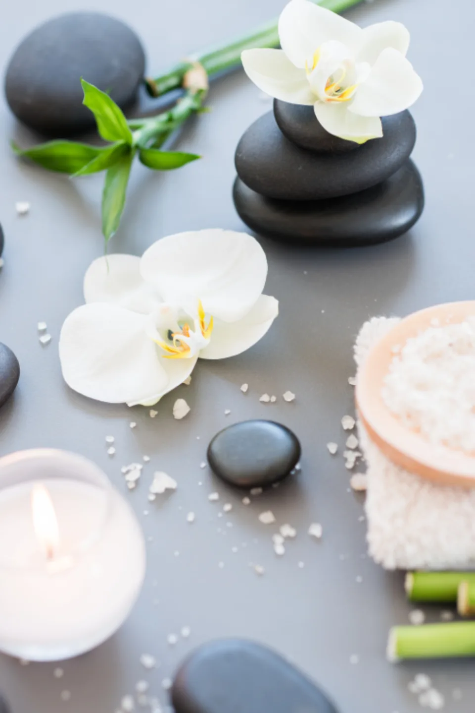
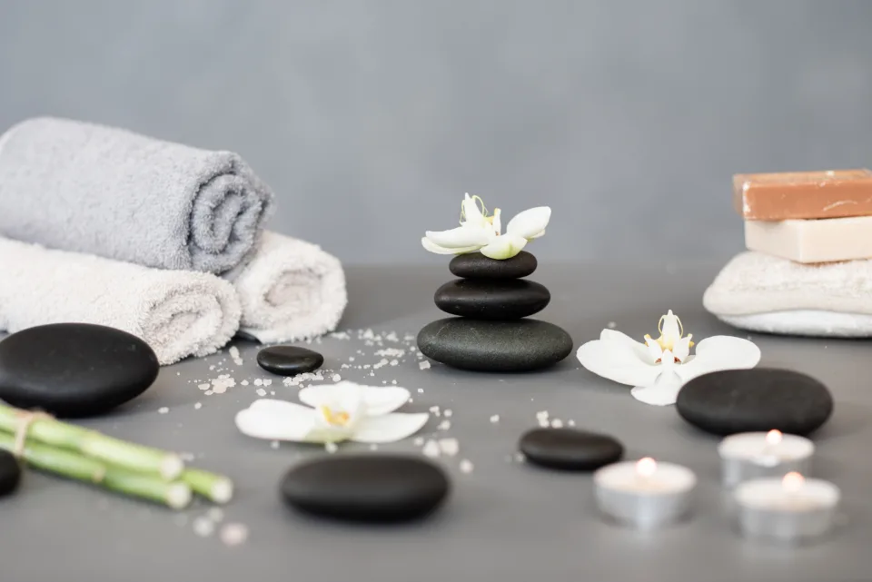
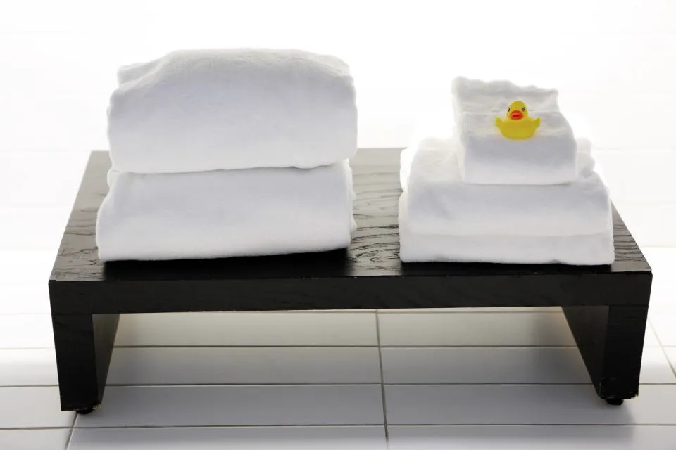

30min
ヘッドスパ 30分
¥4,400初回 ¥3,520
炭酸泉のクレンジングと、頭皮のマッサージ。カットやカラーの日に足す方がいちばん多いコースです。
- 頭皮チェック
- 炭酸泉クレンジング
- 頭皮マッサージ
- ブロー

Courses
価格は税込です。初回料金は20%オフの価格です。カットをトップスタイリストにご指名の場合は＋1,100円。
30min
¥4,400初回 ¥3,520
炭酸泉のクレンジングと、頭皮のマッサージ。カットやカラーの日に足す方がいちばん多いコースです。
60min
¥7,700初回 ¥6,160
カウンセリングから、仕上げのハーブティーまで。首と肩までほぐす、月と櫛の看板コースです。
90min
¥9,900初回 ¥7,920
スパで頭皮をほぐしてから、カットへ。別々に頼むより1,100円お得です。
Find your course
気になることを、いくつでも選んでください。
Aroma
オイルは、その日の気分で選べます。迷ったら、葵におまかせください。

Scalp check
施術の前に、小さなカメラで頭皮をお見せします。健康な頭皮は、青みがかった白。色がちがうときは、それに合わせてコースや香りを変えます。
Questions
顔にはふれないので、メイクはそのままで大丈夫です。生え際が少し濡れることがあるので、気になる方はお直しの時間をどうぞ。
はい。ブローで乾かして仕上げます。オイルは頭皮に残り、毛先はさらっとしています。ご希望があれば、軽くスタイリングもします。
どうぞ、そのまま。終わったら、そっとお声がけします。
安定期に入っていれば、いつもどおり仰向けでお受けいただけます。香りは使わずに行いますので、ご予約の際にお知らせください。
月に一度がおすすめです。カットやカラーの日に、30分を足す方も多くいらっしゃいます。
60分コースは平日19:00、土日18:00まで。30分コースは、その30分後まで受け付けています。

Booking
ネット予約・LINEで「ヘッドスパのみ」をお選びください。30分・60分のギフトチケットも店頭でお作りします（有効期限は六か月）。